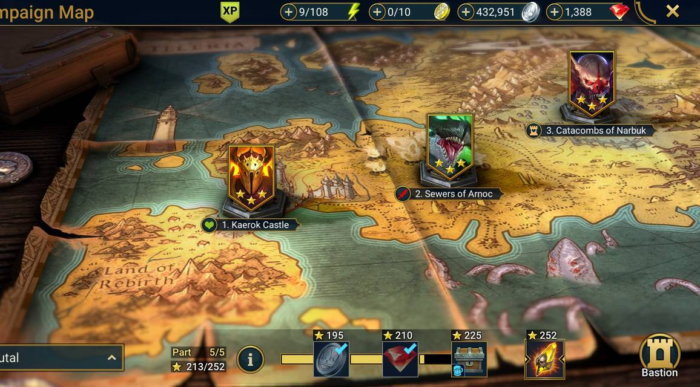

Les maps de campagne
- Cette map se décompose de plusieurs endroits et niveaux différents:
- En premier le château de Kaerok ou 7 premiers niveaux sont à effectuer avant d'avancer dans ce jeu.(équipement de vie en récompense).
- Le deuxième endroit sont des niveaux ou il faut combattre des monstres dans des égouts (équipements attaques en récompense).
- Et le dernier endroit de cette image map, il y a des niveaux pour récupérer des récompenses de type défenses.